Префектура Исикава · Ното и Канадзава · еда
Говядина Ното-гю и овощи Исикавы: зимнее путешествие за мясом, вином и хурмой
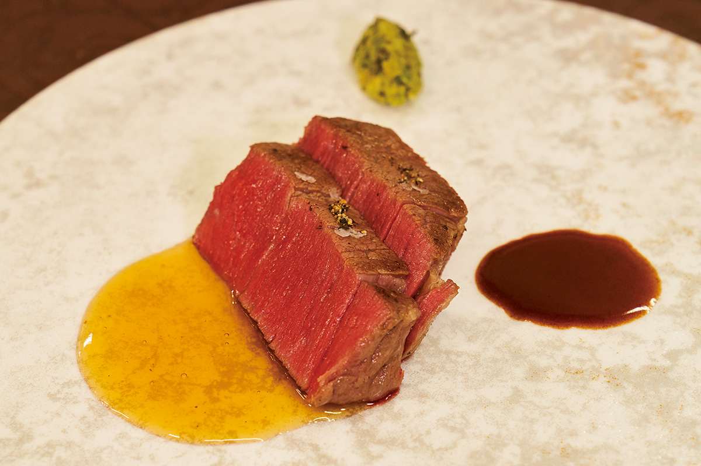
Исикава зажата между горами и Японским морем, и здешние повара уверены, что это слышно во вкусе мяса и овощей. Продюсер и музыкальный критик, который тридцать лет ездит сюда, отправился зимой за говядиной Ното-гю, местными овощами, вином и вяленой хурмой.
Путешествие
Есть местное там, где оно выросло
Наш проводник по этой поездке, продюсер и музыкальный критик, в Исикаве давно свой человек. Около тридцати лет назад его впервые позвала сюда работа в Канадзаве, потом появились друзья, лет десять подряд он проводил здесь каждое лето, а полуостров Ното знает почти как местный. Любимых заведений в одной только Канадзаве у него больше, чем пальцев на руках.
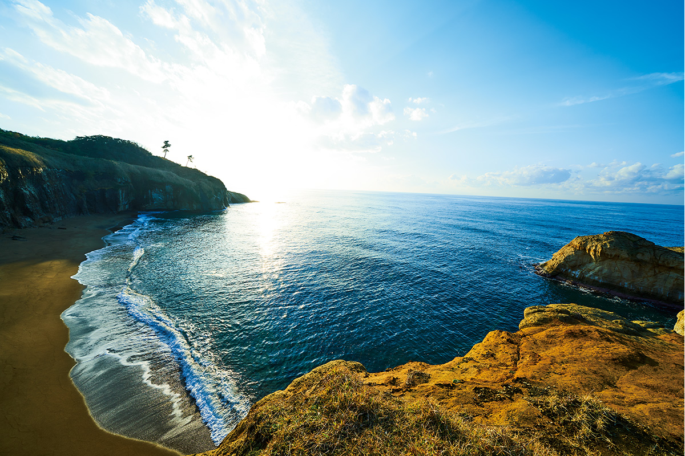
За эти годы он перепробовал в Исикаве очень многое и хорошо знает, чем хороши здешние продукты. Профессиональные повара с этим согласны. Для этой поездки блюда из говядины Ното-гю и овощей префектуры приготовил шеф-повар отеля Kanazawa Tokyu Hotel. С тех пор как он приехал работать в Канадзаву, он постоянно изучает местные продукты, поэтому к его словам стоит прислушаться.
«Здесь прежде всего удачное место: есть и горы, и море. Минералы с моря попадают в почву и прямо влияют на овощи. Климат суровый, но именно поэтому в овощах столько силы, столько воли к жизни. Хозяйства, которые растят Ното-гю, не гонятся за объёмом и работают тщательно. Море влияет и на траву: коровы едят траву, вобравшую морские минералы. Мясо, включая субпродукты, отличное и без постороннего запаха»
шеф-повар отеля
Шеф
Филе при 57 градусах
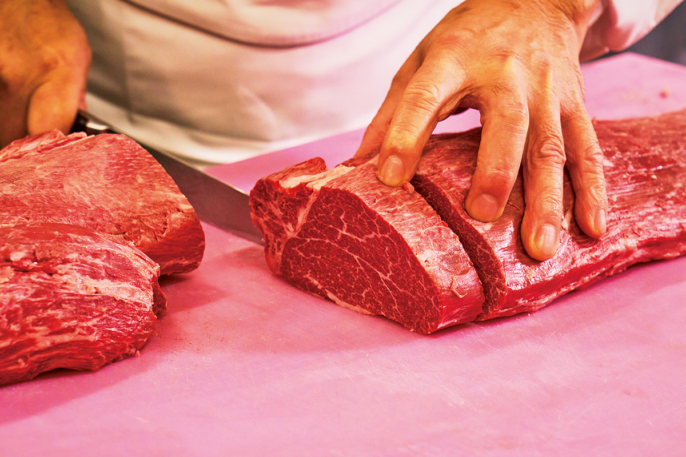
Шеф аккуратно разобрал мясо и приготовил блюдо под названием «Филе Ното-гю A5 при 57 °C». Мясо доводят в консоме при 57 °C техникой «этуфе», а подают с говяжьим консоме, пастой васаби и солью из Судзу, городка на краю полуострова Ното.
«В обычном стейк-хаусе хорошее мясо жарят и подают с солью. Это тоже может быть вкусно, но я человек французской кухни, поэтому сварил его в консоме. Пробовал и 58 °C, но тогда выходит почти средняя прожарка, так что я сознательно опустил на градус. Хорошее мясо хочется держать ближе к слабой прожарке»
шеф-повар отеля
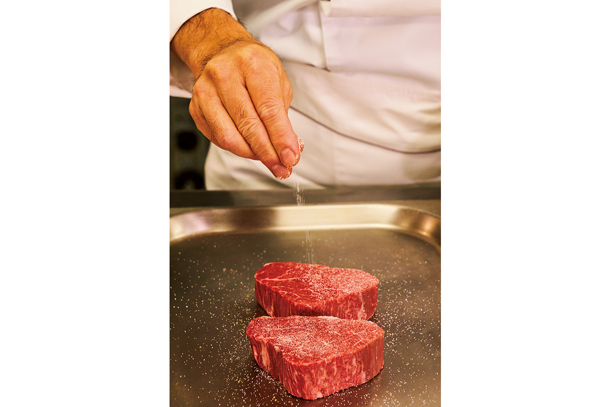
Попробовав, понимаешь, в чём дело. Мясо возвращают в жидкость, в которую перешёл его же сок, и в этой идее, кажется, и есть суть французской кухни. Второе блюдо называлось длинно: «Овощи сатоямы (так в Японии называют обжитые предгорья вокруг деревень), выросшие на красной земле, с экстрактом и пеной шиитаке „Ното 115“». Состав впечатляет: репа «Аямэ-юки», витаминный и чёрный дайкон, корень лопуха, тыква баттернат, мини-пекинская капуста, кейл, фиолетовая горчица, свёкла, лотос Кага, редис, мини-морковь и грибы шиитаке «Ното 115», выращенные на брёвнах.
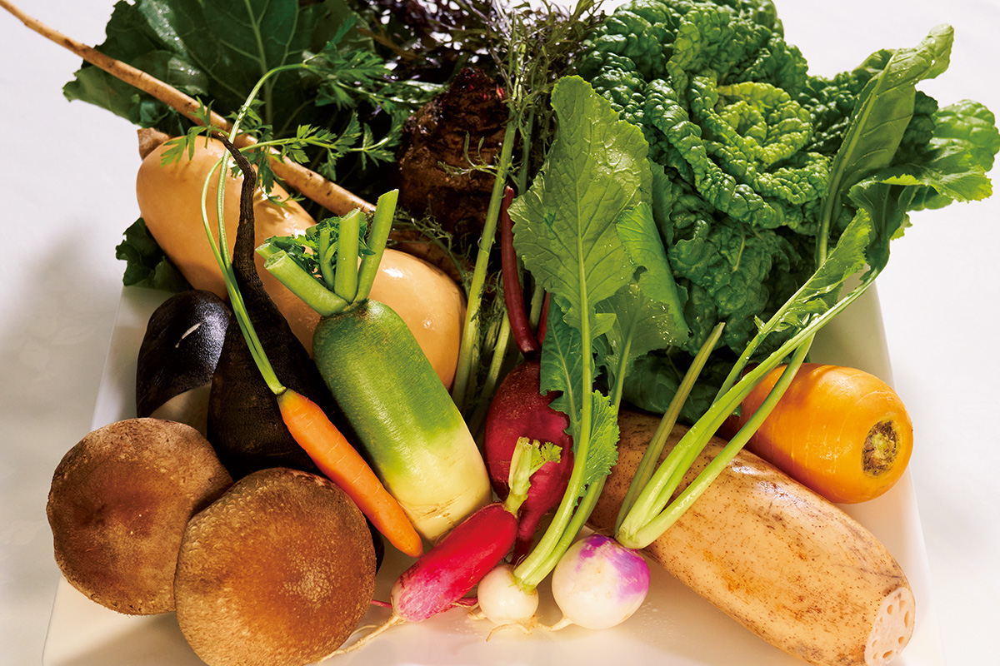
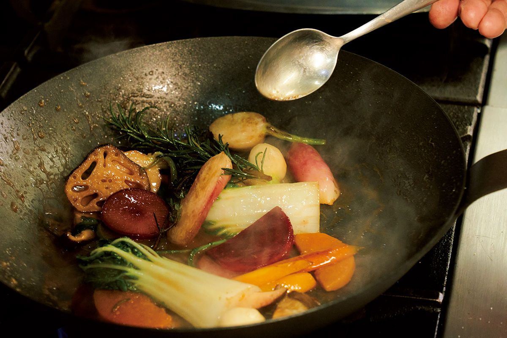
О местных овощах шеф говорит так: овощи из сатоямы Ното не круглые отличники, в них есть строптивость, но и отличник в них тоже есть, и это хорошо. А лучше всего, по его словам, есть местное там, где оно выросло. Сила этих овощей, считает он, от того, что им самим надо выжить.
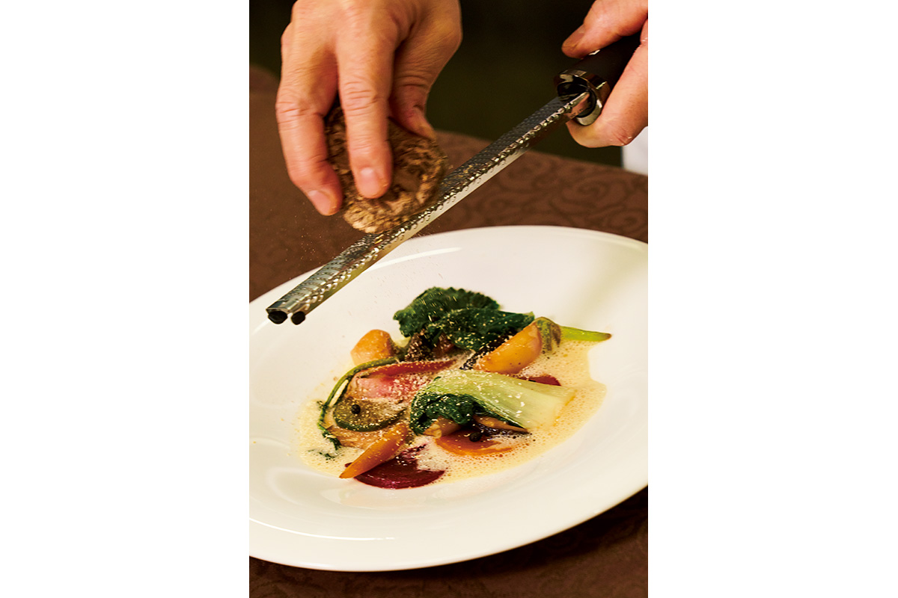
Летом 2021 года шеф начал серию ужинов «Календарь вкуса: есть Исикаву», четыре вечера в год, и они быстро стали популярны. На ужинах продукты Исикавы подавали в паре с вином и сакэ. В ноябре 2021 года на «Пиру урожайной осени» шеф подал овощи сатоямы Ното в супе из шиитаке с карамелизированной кабанятиной, бульоном фюме и редкой местной крупой «камаси».
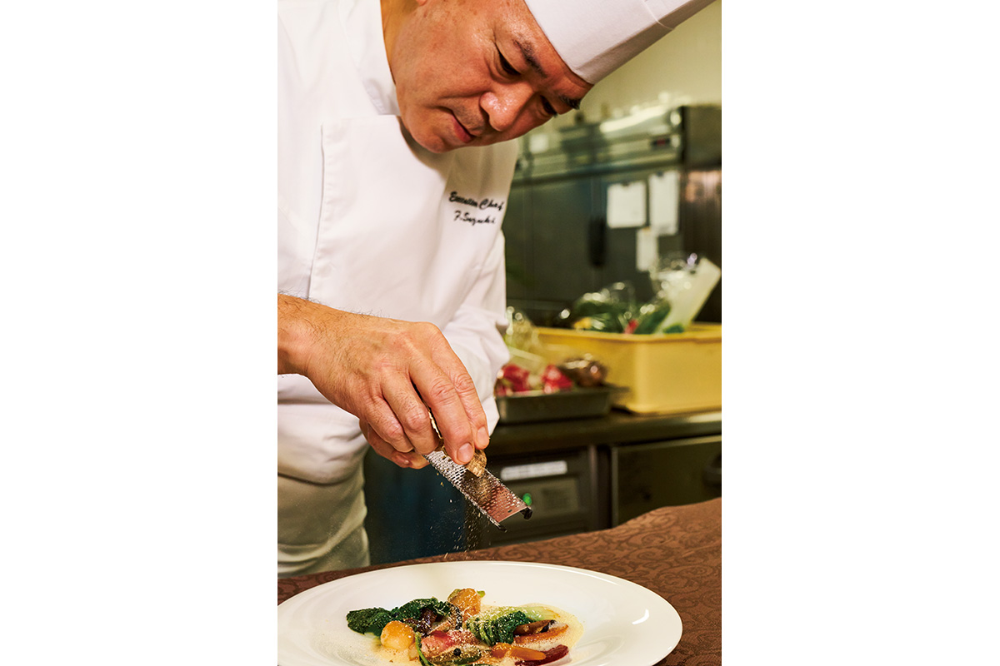
Kanazawa Tokyu Hotel
- Адрес
- префектура Исикава, Канадзава, Коринбо, 2-1-1
Ното-гю
Говядина, которая тает во рту
Зимняя поездка по Исикаве похожа на путешествие без конца: радуются язык и желудок, пейзажи напоминают живопись и кино, и всё это вместе уносит куда-то за пределы времени.
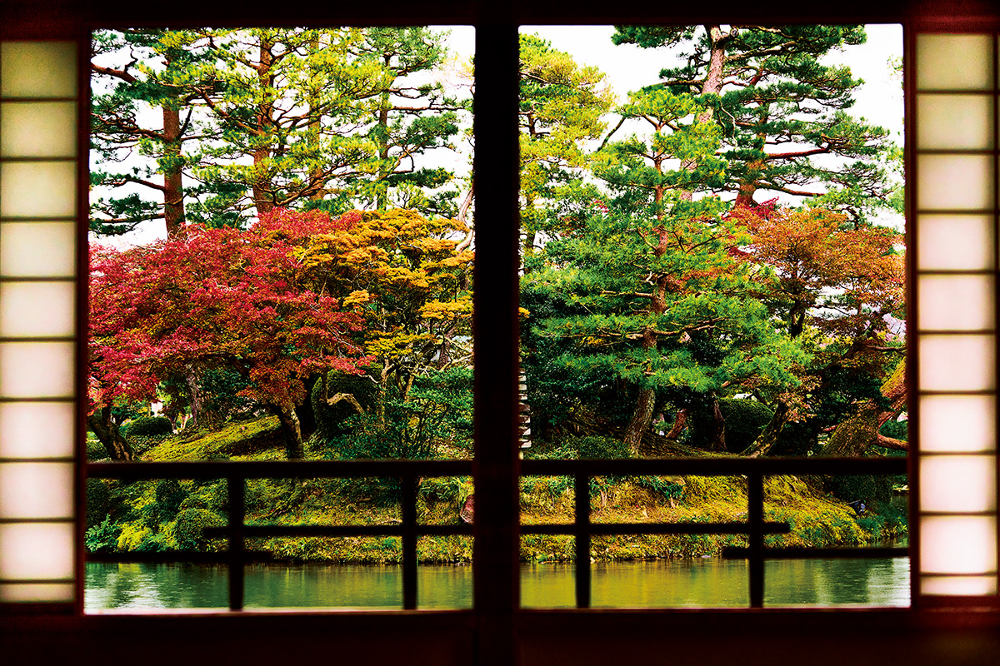
Компания «Тэраока тикусан» растит говядину Ното-гю с целью сделать её маркой, известной на всю Японию, и держит собственный ресторан «Тэраока фуся». Исполнительный директор компании говорит о своём мясе уверенно: Исикава признана объектом всемирного сельскохозяйственного наследия, среда для хозяйства здесь хорошая, значит, и коровы растут в одном из лучших мест на свете. В мясе очень много олеиновой кислоты, поэтому оно тает во рту. Ното-гю в сукияки, в сябу-сябу или сырым ломтиками действительно выше всяких похвал.
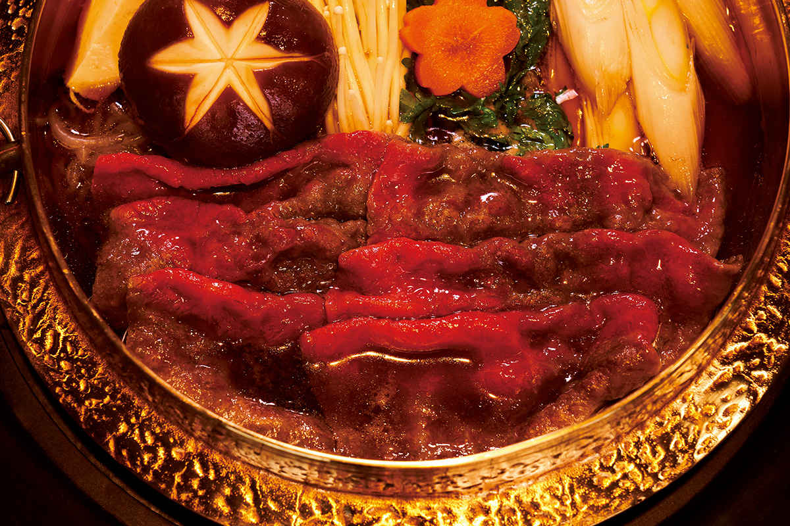
«Тэраока фуся», главный ресторан в Тоги
- Адрес
- префектура Исикава, Сика, Тоги-Рёкэмати, и-30
- Телефон
- +81 767-42-2941
Вино
Heidee Winery у Японского моря
На побережье полуострова, в районе Мондзэн города Вадзима, работает Heidee Winery. Виноград растёт на пологих холмах с видом на Японское море, а вино здесь стараются делать так, чтобы в нём был слышен характер Ното.
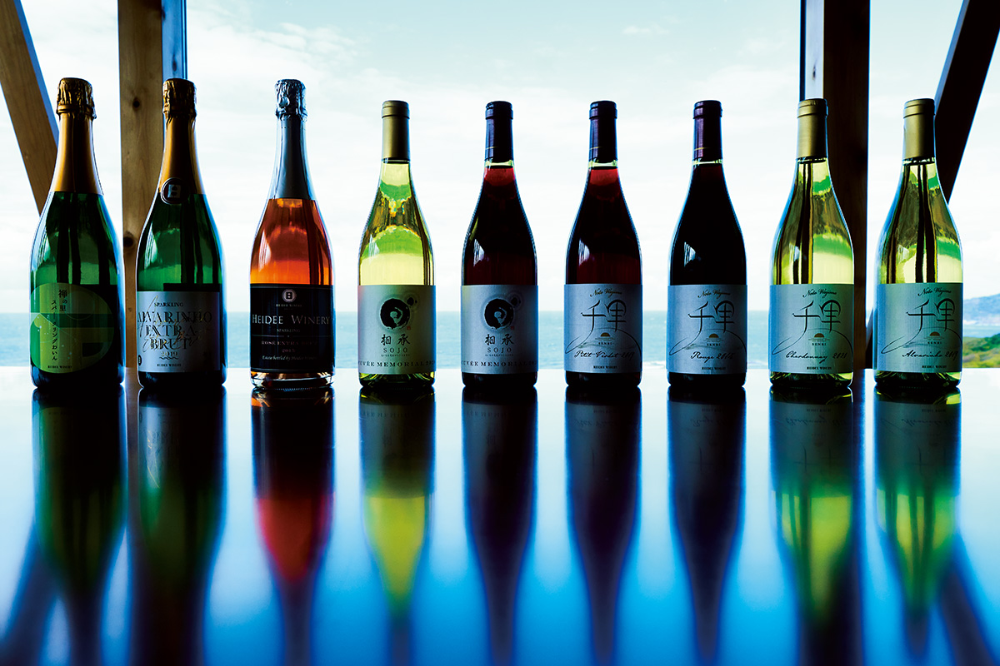
В 2022 году, по словам президента винодельни, здесь выращивали семь сортов: четыре белых и три красных. На белые вина делают особую ставку: они хорошо идут к синей рыбе и рыбе с плотным мясом, и канадзавские суши-бары говорят, что с ними легко работать. Президент твёрдо решил никогда не гнаться за массовым производством с низкой наценкой, и это внушает уважение.
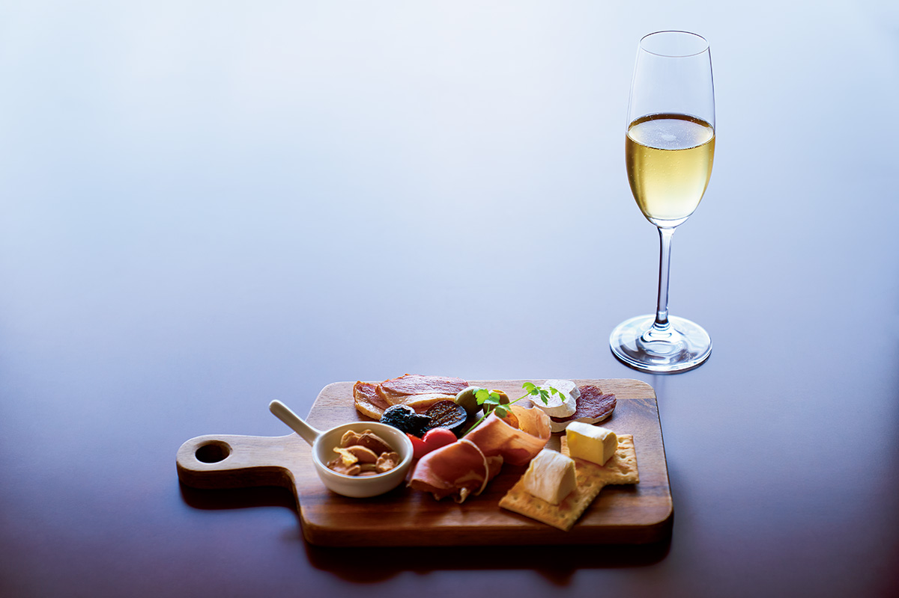
Землетрясение 1 января 2024 года повредило здание винодельни и разрушило её ресторан. Вино здесь делать продолжили: в марте 2025 года вышло ограниченной партией вино из винограда урожая 2024 года, пережившего землетрясение и ливни.
Heidee Winery
- Адрес
- префектура Исикава, Вадзима, Мондзэн-мати, Тиё, 31-21
- Телефон
- +81 768-42-2622
Хурма
Корогаки из Сики и бар в старом доме
Все, кто в Исикаве связан с едой, любят её и с удовольствием делают своё дело. Смотреть, как работают мастера вяленой хурмы корогаки, было всё равно что смотреть красивый спектакль.
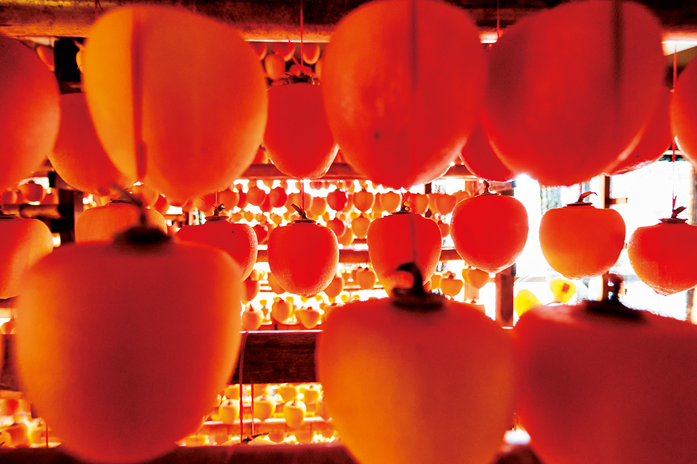
В июне 2021 года Blue Bar переехал в старый дом, которому больше ста лет, и стал очень популярен. Здесь подают корогаки, начинённую сыром маскарпоне, и это очень вкусно.
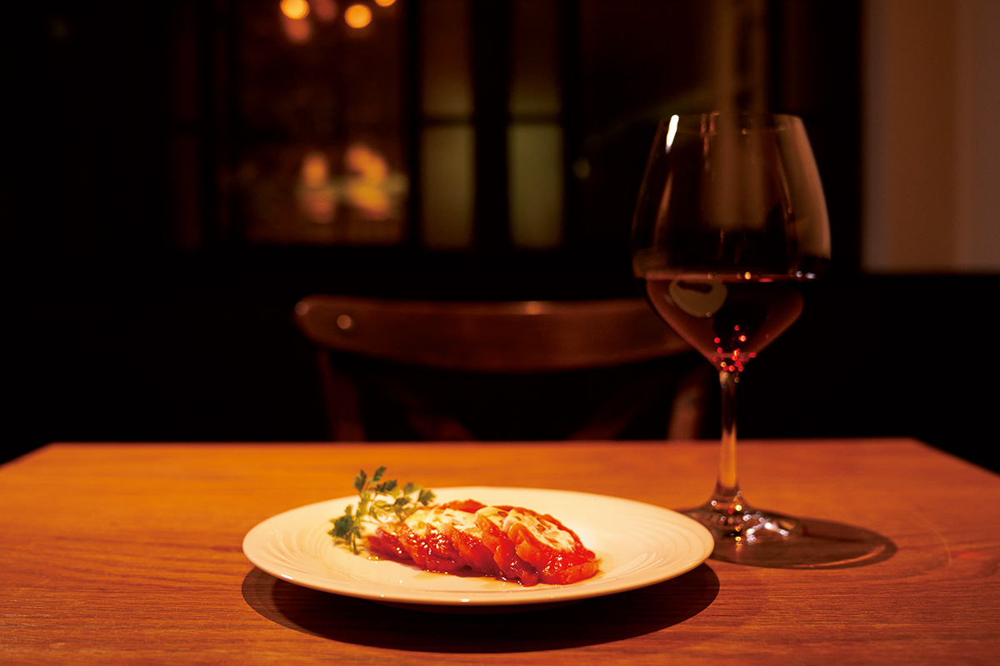
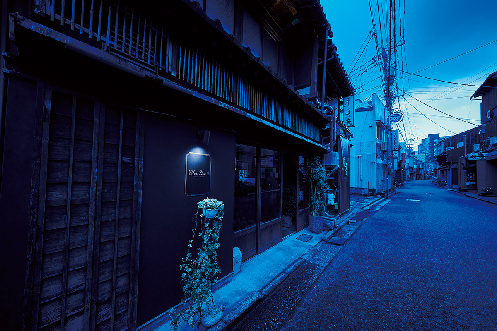
Blue Bar
- Адрес
- префектура Исикава, Канадзава, Катамати, 2-29-5
- Сайт
- bluebar.jp
Канадзава
Одэн, лотос и овощи Кага
Без японской кухни в такой поездке не обойтись. В одэн-баре «Ёсибо» много овощей Канадзавы, например хризантемы сюнгику и дайкона «Гэнсукэ», и хороший выбор сакэ.
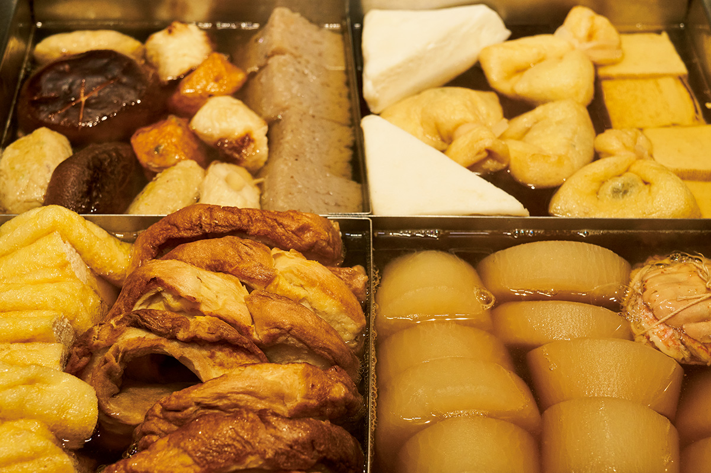
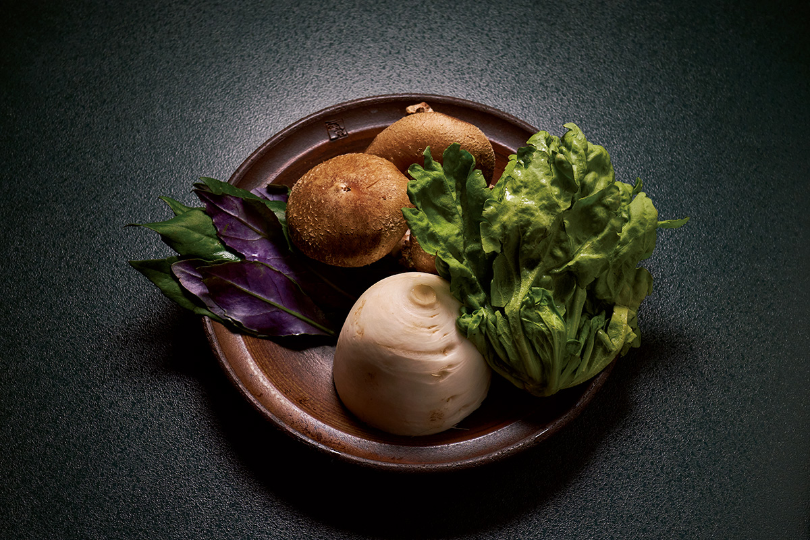
Рядом со станцией Канадзава четвёртое поколение семьи держит ресторан «Такасакия». Ради одного его блюда, лотоса Кага, запаренного на пару («хасу-муси»), уже стоит туда приехать. Вслед за ним идут классика овощей Кага, кинсюсо в уксусе с мальками сирасу, и паровой яичный крем тяванмуси с грибами мацутакэ и шампиньонами. Жареный вьюн в соусе кабаяки входит в число любимых блюд нашего проводника в Канадзаве, и здешний, по его словам, лучший из всех, что он пробовал. Время за таким столом течёт медленно и приятно.
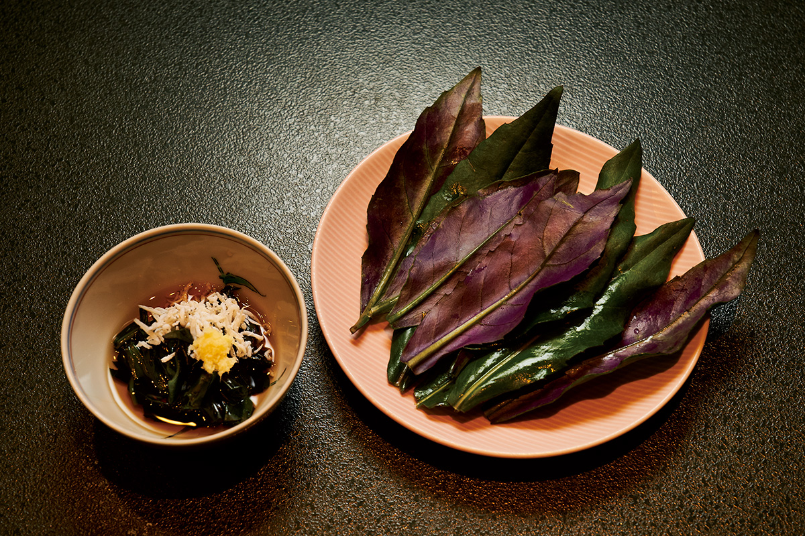
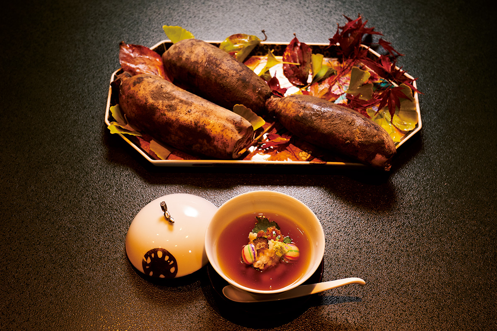
«Такасакия»
- Адрес
- префектура Исикава, Канадзава, Хоммати, 2-19-20
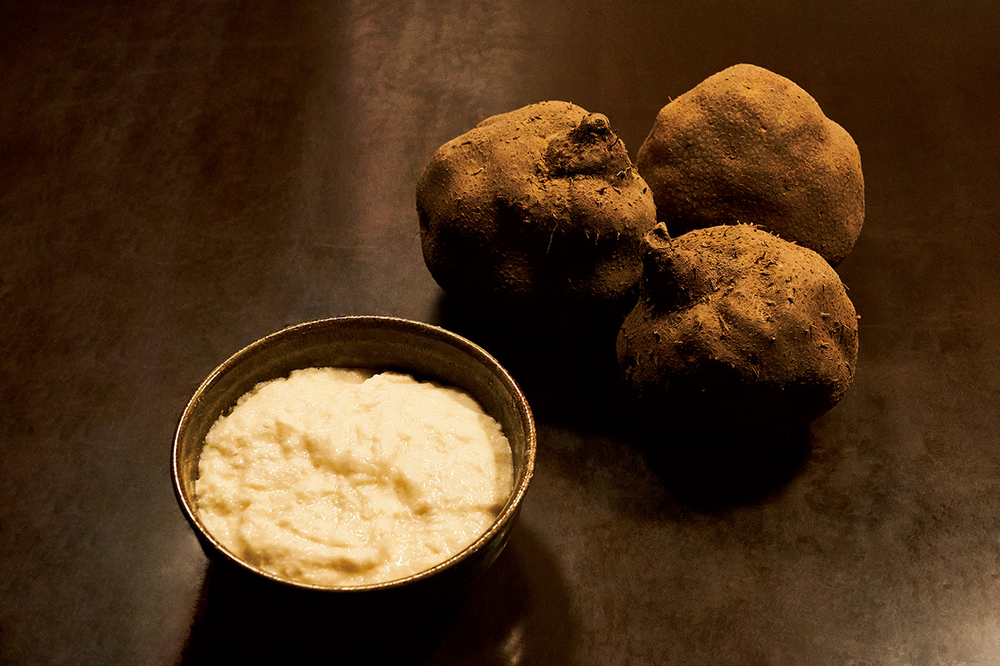
Ферма «Окамото»
- Адрес
- префектура Исикава, Номи, Фукуока-мати, ро-184
Пейзажи
Зимняя Исикава
В феврале 2022 года снимки фотографа этой поездки показали в Канадзаве на выставке «Снимая Исикаву»: святилища и храмы, природа, люди и дары моря и гор.
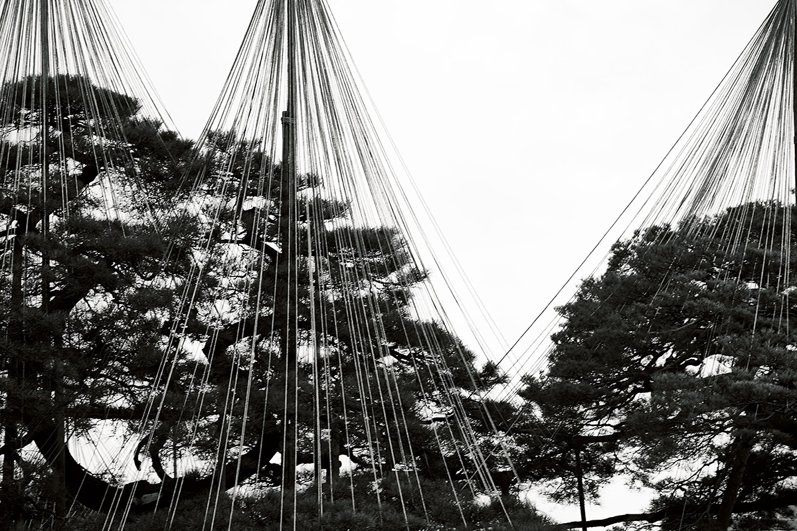
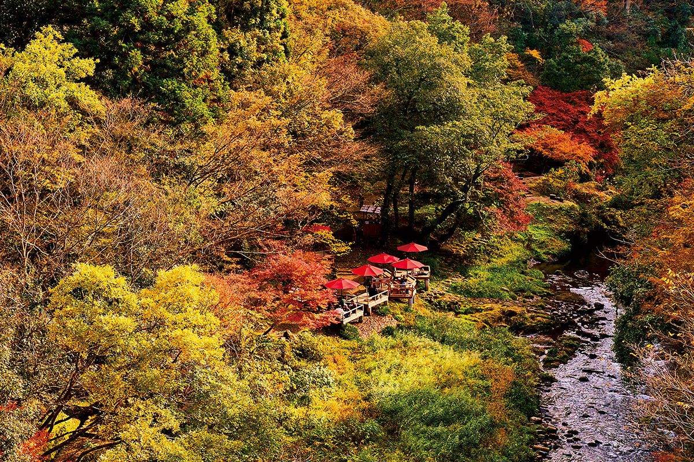
Фото: Масааки Миядзава.